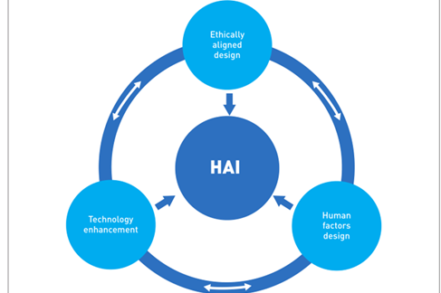

Keynotes Abstract
Despite the enormous data brought by the Web, the quality of social network data is often difficult to guarantee. In addition to the representativeness of the data itself, the process of obtaining data usually runs into biased sampling in statistics, temporal-spatial dimensions, or even semantic dimensions. Thus the conclusions and decisions obtained may remain unaccountable. Recent works on Counterfactual and Casual Reasoning show a very positive result on anti-bias modeling, yet the whole interdisciplinary field is still under-explored.On the other hand, although social media data is mega in size, the data dimension is usually relatively single and is considered a kind of "thin data". For instance, we can easily obtain the user's social media content, but the age, gender, occupation, and other more detailed information is still hard to observe. This will cause modeling to easily fall into "Ecological Fallacy". Therefore the privacy preserving and related ethic discussion have been integrated into much intersectional research. For instance, the combination of Differential Privacy and Generative Adversarial Networks (GAN) in recent work is showing the ability to alleviate the issue.By this workshop, we hope some sparkles from the world-leading insightful minds that can inspire the participants' research on a new Reasonable, Interpretable, and Human-Centered AI paradigm.
GOALS
Our goal is to develop Human-Centered AI (HAI) around the core and multidisciplinary nature of Web Science. To discuss in the context of some global challenges such as COVID-19 is the key to embedding a new paradigm of AI into the after-pandemic world. More importantly, Web-based data, structures, and skills should guide AI to enhance our humanity, not to reduce or replace it.
